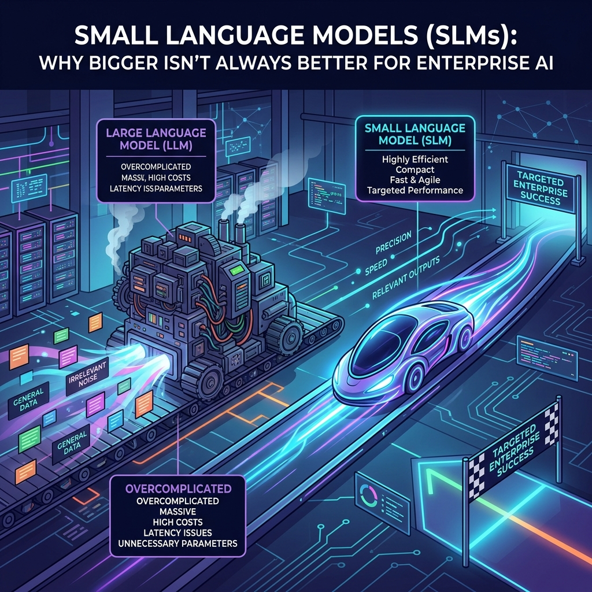

Small Language Models (SLMs): Why bigger isn't always better for enterprise AI.
The future of enterprise AI will be defined by models that are not just smart, but smartly deployed.

SLMs are the lean, mean, cost-savvy version of massive language models.
Imagine a world where an AI can be as nimble as a sprinter, delivering insights in a fraction of the time it takes a marathon runner to finish. That world is already here, thanks to Small Language Models, or SLMs. These compact powerhouses are redefining what it means to harness artificial intelligence in the boardroom and beyond. 🚀 They are the lean, mean, cost‑savvy version of the massive language models that dominate headlines, yet they pack a punch that is hard to overlook. By trimming the size of the neural network, developers can deploy SLMs on modest hardware, slash training time, and keep sensitive data locked in place. The result? A tailor‑made AI that feels more like a personal assistant than a generic chatbot. 📈
Efficiency and Specialization
SLMs are built on the same foundational principles that power large language models, but with a deliberate focus on efficiency and specialization. Instead of training a model on a universal corpus that spans every domain, SLMs hone in on a specific domain or set of tasks. This targeted approach means that the model learns faster, uses fewer parameters, and can be fine‑tuned with a fraction of the data volume that would be required for a general‑purpose LLM. The payoff is twofold: the model becomes lightning‑fast during inference, and the computational footprint shrinks enough that it can run on edge devices or in private cloud environments without a GPU cluster. As a result, organizations no longer need to invest in expensive hardware or worry about the latency that comes with sending requests to distant data centers. ⚙️
Security, Compliance, and Cost Savings
For enterprises, the advantages of SLMs go beyond raw speed. Security and compliance are top priorities for any business that handles customer data, intellectual property, or regulated information. With SLMs, the data never has to leave the premises because the model can be trained and deployed entirely on‑premises or within a dedicated private cloud. This eliminates the risk of data leakage that can occur when sending sensitive text to a third‑party LLM service. Moreover, the smaller size of an SLM allows for granular governance: teams can audit the model’s behavior, adjust its outputs, and enforce business rules with precision. The cost savings are significant as well. Training an SLM can consume a fraction of the GPU hours and storage that a large model would require, translating into lower cloud bills and a smaller carbon footprint. 🌱
The Specialized Future
Looking ahead, the trend toward specialized, efficient AI is only accelerating. As more industries adopt SLMs for niche applications—ranging from legal document analysis to real‑time translation—organizations will find that a single, well‑tuned model can replace a suite of generic tools. This consolidation not only simplifies the tech stack but also frees up data science teams to focus on higher‑value projects. The future of enterprise AI will be defined by models that are not just smart, but also smartly deployed—balancing performance, cost, and governance in a way that aligns with business goals. 🔮
Sources
- "Small Language Models (SLMs) for Enterprise AI" - Forbes Tech Council
- "Advantages of Small Language Models (SLMs) in Enterprise AI" - IBM Research
- "Small Language Models (SLMs) vs Large Language Models (LLMs) in Enterprise AI" - Gartner
- "Enterprise AI Adoption of Small Language Models (SLMs)" - World Economic Forum
- "Small Language Models (SLMs) for Specific Enterprise AI Tasks" - McKinsey